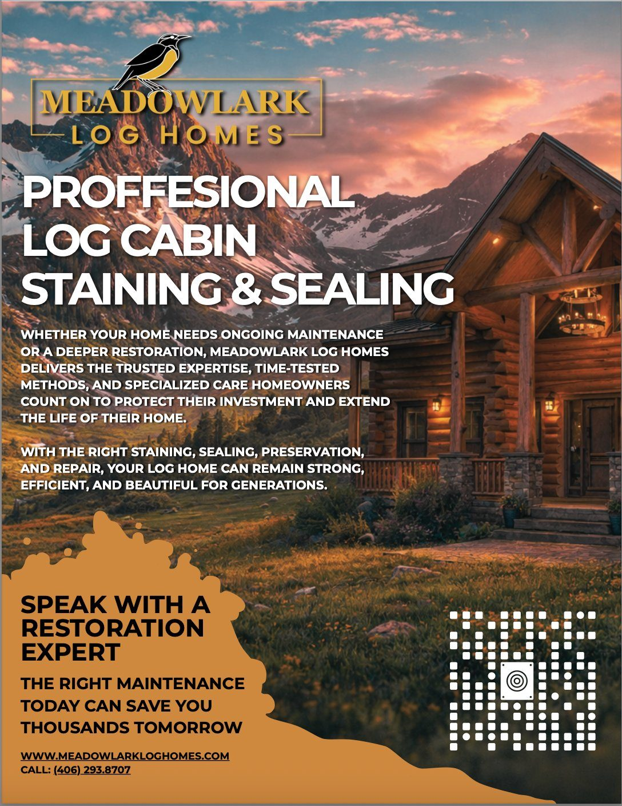
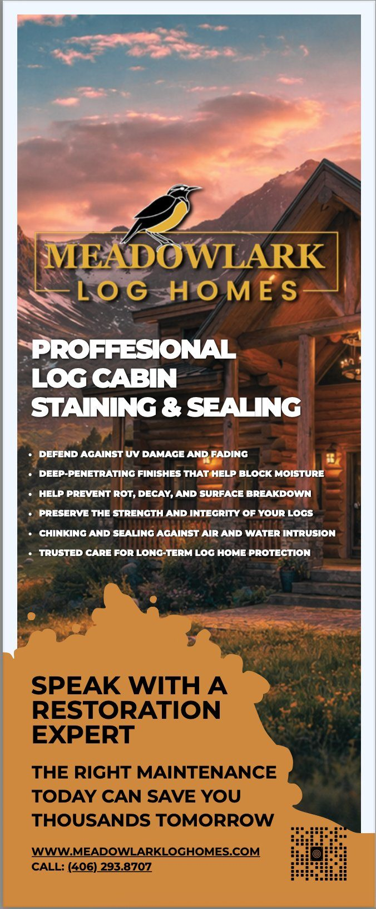
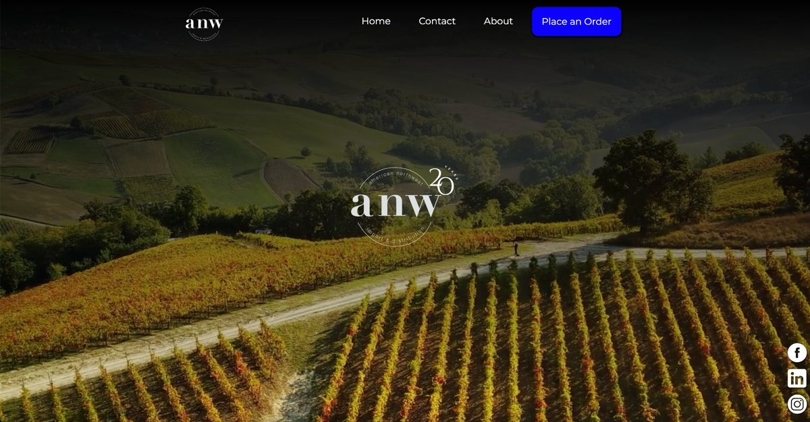

10+ years building and scaling full-funnel revenue systems across industrial, manufacturing, and services organizations — from demand generation and paid acquisition to CRM architecture, lifecycle marketing, and sales enablement. This portfolio leads with current client work at Kaldera Analytics, then traces back through go-to-market leadership at Performance Design, territory development at ANW, and enterprise capital equipment sales at Torr Industries.
Rebuild HubSpot or Salesforce into a real revenue operating system — pipeline, lifecycle stages, attribution, and reporting tied to outcomes.
Lifecycle marketing & automation
Multi-touch nurture sequences, lead routing, re-engagement campaigns, and sales handoff systems that recover demand.
Paid acquisition & media strategy
Google Ads, Meta, LinkedIn, PMAX — targeting, creative strategy, budget pacing, and ROAS optimization across multi-channel campaigns.
Conversion-focused web & landing pages
Sites and pages designed around buyer intent — built to capture demand and hand off to sales with context.
SEO & AI search visibility
Content architecture built for search engines and AI discovery — found by buyers doing self-directed research.
Agentic AI & custom tooling
Custom AI-enabled workflows that automate research, competitive analysis, and reporting — reducing manual workload.
The multiplier effect
Force
×
Multiplier
Where the fit is right, I become a force multiplier — identifying where leads are being lost, where spend is underperforming, where visibility is too weak, and where better systems unlock more pipeline, better conversion, and stronger market penetration. Backed by direct experience across industrial, manufacturing, and service-based companies.
The real cost of inaction
Without these systems
Leads falling through CRM gaps unworked
Paid spend with no attribution clarity
Inconsistent sales follow-up
Channels without a unified strategy
No visibility into revenue drivers
Growth harder than it needs to be
With a capable system
More pipeline from existing spend
Faster sales cycles with better context
Clearer attribution, smarter budget decisions
Automated follow-up that never drops leads
Revenue visibility from first touch to close
A growth system that compounds over time
The opportunity is not just better marketing. It is a more capable growth system.
For the right company, the question is not whether these improvements matter — it is how much growth is being left on the table without them.
Client engagement through Kaldera Analytics. Led full-funnel paid social strategy, creative direction, and team management across 60+ campaigns in multiple Midwest markets.
$2.4MAd Spend Managed
+123%ROAS Increase
−17%Conversion Cost
60+Campaigns
3Specialists Led
$500KContent Budget
Strategy
Content Strategy
Scroll-stopping video & creative direction
Drone cinematography, completed project showcases, and luxury-framed footage built to stop the scroll.
Drone cinematography & aerial views
Before/after completed project content
Luxury framing & high-interest creative
$500K content budget managed
Budget Architecture
Proprietary pacing model across 60+ campaigns
Custom pacing model to manage spend, seasonality, and market allocation across 60+ concurrent campaigns.
$2.4M in ad spend across all markets
Seasonal budget allocation logic
60+ campaigns tracked & optimized
Market-level performance benchmarks
Team & Operations
Sprint planning, SOPs & ICP development
Led three ad specialists through sprint-based execution, expanded ICP, and built company-wide marketing SOPs.
Sprint planning — team of 3 managed
ICP expansion into emerging markets
Company-wide SOPs implemented
Brand stewardship across all creative
Deliverables
Website · Homepage
perfectpaverco.com
Conversion-focused homepage with a free-estimate call to action and click-to-call up front, built for local service demand across every market.
Facebook / Meta · Ad Library
Active Campaign Overview
Four concurrently active ad sets across Midwest markets with multiple creative versions on Facebook, Instagram, and Messenger.
Website · perfectpaverco.com
Website · Brand Video
Local. Proven.
Video-led proof section backed by headline stats on experience, states served and square feet restored.
Website · Social Proof
Why Choose Perfect Paver Co
Lifestyle photography paired with real homeowner testimonials, each tagged to the project location.
Website · Services
Our Services
Service cards for cleaning, sealing, polymeric sand, aftercare and repairs, each linking to its own landing page.
Website · Local SEO
Service Area Pages
Market pages across Ohio, Georgia, Florida, Indiana and Illinois, built to capture local search demand.
Ad Copy Frameworks
Problem–Solution Hook
Winter freeze and thaw cycles cause pavers to shift, sink, and loosen beneath the surface. Our specialists restore and stabilize your pavers, then prepare them for long-term protection.
Get A Free Inspection →
Investment Framing
Pavers deteriorate as joint sand erodes. If the base is stable, restoration is typically a fraction of replacement cost. Addressing it early protects your investment.
Restore Before It Costs More →
Seasonal / Empathy Open
Chicago winter feels long. The gray skies. The cold mornings. But brighter days are almost here — now is the time to reset your patio or driveway.
Get Quote →
Results
Full service team schedules across all markets. 123% ROAS increase, 17% lower conversion costs, expanded market share, and a scalable operation with documentation to sustain it.
Full team schedules+123% ROAS−17% conversion costMarket expansionSOPs & documentation
Client engagement through Kaldera Analytics. Built foundational revenue infrastructure — rebuilding HubSpot, developing nurture systems, and launching M&R as a profitable adjacent revenue channel.
$200KM&R Revenue in First 3 Days
$1.4MM&R Revenue to Date
0→1New Business Line
Strategy
Pillar 01
HubSpot as the CRM operating system
Rebuilt HubSpot into the central hub for lead tracking, pipeline visibility, and sales activity.
Pipeline structure & deal stage design
Contact & data standardization
Sales activity tracking & dashboards
CRM adoption across the team
Pillar 02
Nurture campaigns & workflow automations
Built automated follow-up sequences and nurture flows to manage inbound demand and recover cold leads.
Inbound lead routing & workflows
Multi-touch nurture email sequences
Re-engagement campaigns
Lifecycle stage automation
Pillar 03
M&R as a profitable revenue channel
Developed Maintenance & Restoration as an adjacent business line — funding paid acquisition for the core log home business.
Positioning & offer development
Dedicated demand gen & print collateral
Separate funnel & conversion tracking
Channel diversification strategy
M&R Launch
M&R
$1.4M
Since Launch
Maintenance & Restoration launched as its own business line with a dedicated offer, direct mail, door hangers and a separate tracked funnel. The launch campaign generated $200K in its first three days, and the line has produced $1.4M in revenue since inception, giving Meadowlark a second revenue stream that now funds paid acquisition for the core log home business.
Deliverables
Website · Homepage
meadowlarkloghomes.com
Full-service web presence built around trust, craftsmanship and three generations of regional identity.

Print · Mailer Flyer
Restoration & Preservation Flyer
Direct mail for the M&R business line — staining, sealing, and long-term care.

Print · Door Hanger
Neighborhood Canvassing Piece
UV defense, moisture blocking, chinking & sealing — service benefits front and center.
Website · meadowlarkloghomes.com
Website · Product Catalog
Log Home Models
Model cards with package pricing, square footage and bedrooms, built to move buyers from browsing to a floor plan.
Website · Buyer Journey
Three Ways to Build
Three clear paths, from a proven model to a fully custom home, each with its own next step.
Website · M&R Landing Page
Maintenance Services
Dedicated landing page for the M&R line with an inline lead form, feeding the separate M&R funnel.
Results
A more durable growth engine: better lead handling, stronger follow-up, clearer pipeline visibility, and a net-new M&R revenue stream that brought in $200K in its first three days and $1.4M to date, funding paid acquisition.
CRM rebuiltNurture automated$200K in first 3 days$1.4M M&R revenue to datePaid dependency reducedPipeline visibility
Twelve-month marketing plan built for Kampgrounds of America and launched in 2026 to grow K2, the reservation and operations platform behind 500+ KOA campgrounds. The plan turns proof KOA already owns into a repeatable engine that makes K2 easier for Franchise Development to sell, easier for owners to adopt, and harder for the industry to ignore.
500+Campgrounds on K2
4Connected Pillars
3Roadmap Phases
12Month Blueprint
5Stage Measurement Chain
Strategy
Pillar 01
Position & prove K2
One K2 story told through four owner outcomes: revenue, occupancy, efficiency and staff time.
Positioning & value proposition
Customer proof library
ROI calculator & comparisons
Pillar 02
Enable franchise sales
Tools that let Franchise Development sell K2 as a business advantage a prospect can measure.
Sales dashboards from K2 data
Living battle cards
Account-based marketing
Pillar 03
Release & adoption engine
An 11-step launch process connecting IS, Product, Marketing, Sales and PR, so every release gets adopted.
Standard release process
Central knowledge system
Targeted adoption campaigns
Pillar 04
Market leadership
K2 becomes a steady source of data-backed stories the outdoor hospitality trade wants to tell.
Trade media & exec bylines
Speaking & awards
Annual K2 benchmark research
The Plan
Page 1 · Overview
Easier to Sell. Easier to Adopt.
The four-pillar engine and K2's 2025 public record in one view.
Page 2 · Sales Enablement
Proof That Sells
Sample sales dashboard, a battle card, and a five-step ABM flow.
Page 3 · Launch & Lead
Launch. Adopt. Lead.
The release process, knowledge system, and editorial story engine.
Page 4 · Measurement
Measure What Works
Five-stage scorecard and a three-phase, 12-month roadmap.
Leading with the strongest proof story lifts first-to-second meeting conversion from 33% to 58%, so roughly 1.75× more prospects advance from the same lead volume.
1.75× more prospects advancing
Owner Revenue
Adoption campaigns take reservation add-ons from 42% of parks to about 70%. At $11.30 per reservation and a 10% attach rate across 2.3M reservations, owners add about $2.6M a year.
~$2.6M added owner revenue / yr
Operating Efficiency
Proof is built once and reused across sales, owner and trade channels. Parks running online booking and Dynamic Optimization reach 71% online reservations and reopen about 284 stranded nights a season.
284 nights reopened per park
Analytics & Measurement
Five-Stage Scorecard
Every pillar reports on one chain: awareness, engagement, sales impact, adoption and business outcomes, against baselines set in the first 90 days.
Monthly one-page scorecard
Story Testing
Five sales stories rotated and tracked against real conversions. "Fill the gaps in reservations" led at 58%, against 33% for the general revenue story.
Winning story: +25 pts
Adoption Tracking
K2 records which parks have each feature switched on, so every adoption campaign is targeted and measured with K2's own data. Quarterly scale, fix or stop reviews follow the evidence.
Feature-level activation data
Results
Launched in 2026. About 1.75× more franchise prospects advancing to a second meeting, reservation add-on adoption up from 42% to about 70% of parks (+67% ancillary revenue), about $2.6M a year in added owner revenue, and 16 earned media placements a year positioning KOA as the campground technology leader.
90-Day Demand Generation Plan · Client Engagement · 2026
Interactive demand generation plan built for Control Bionics and launched in 2026, with a buyer playbook for the sales team. NeuroStrip is a wireless sensor that shows, live on an iPad, how hard each muscle is working. The plan defines the audience, message, budget and expected return of an account-based program built to reach 20 qualified sales calls a week.
20Qualified Calls / Week Goal
$90KBase 90-Day Budget
$930Break-Even Cost per Call
7Buying Roles Mapped
12Campaign Pieces
Strategy
Targeting & Buying Group
Who to reach first, and who signs
Physical therapy groups with 5 to 25 clinics first, then pro and college sport, with everyone else handled inbound.
70 / 20 / 10 account mix
Seven roles across four approvals
Top objections with answers
Buyer playbook for sales
Campaign & Channels
"See the muscle behind the number"
One idea said three ways for executive, operations and clinical buyers, tested against a holdout group.
Video, display, native & carousel
Direct mail & geofenced mobile
Search ads & email sequences
A/B messages with keep and cut rules
Budget & Unit Economics
Lean, Base and Aggressive options
$45K, $90K and $150K scenarios, each tied to calls, pilots, customers and first-year value.
Cost per call & per customer
Day 30, 60 and 90 checkpoints
Lead handoff & reply times
Salesforce build for tracking
Deliverables
Interactive Plan · Overview
The 90-Day Plan
A two-layer page: a plain answer up front, with the math and assumptions one click deeper.
Buyer Playbook
The Buying Group
Who signs, who approves clinically, who runs the pilot, and who decides rollout.
Budget Model
Lean vs. Base vs. Aggressive
Interactive comparison of spend, qualified calls, pilots and new customers per quarter.
At the $90K Base budget, the program produces about $180K in first-year customer value per quarter: a 2.0× return in year one, before any group adds clinics.
2.0× first-year return
Unit Economics
About $510 per qualified call all-in, 45% under the $930 break-even. Customer acquisition cost of about $4,100 against $7,500 in first-year value.
1.8× first-year value to CAC
Payback & Pipeline
About 195 qualified calls a quarter at run rate become ~107 opportunities worth roughly $800K. Each new customer pays back its acquisition cost in under 7 months.
Payback in under 7 months
Analytics & Measurement
Holdout Attribution
Half the target account list is held out from ads, so lift is measured as meetings per 100 accounts against a true control, not last-click credit.
Incremental lift, not last click
Message A/B Testing
Two messages per buyer cluster (executive, operations, clinical). A winner needs 30% more interested replies before it takes the budget.
30% lift threshold to win
Weekly Scorecard
Five numbers reviewed every week, with a decision at Day 30, 60 and 90. Salesforce source and stage picklists tie every call back to its channel.
Day 30 / 60 / 90 decisions
Results
Launched in 2026. At the Base budget the program reached about 15 qualified calls a week by Day 90 (roughly 4× the 3.8 a week baseline), 24 new customers and $180K in first-year value per quarter, a 2.0× first-year return on spend, and payback in under 7 months per customer.
~15 calls / week by Day 90~4× pipeline24 customers / quarter2.0× first-year return<7 month payback
05
Rhin-O-Tuff
Director of Growth & Go-To-Market · Performance Design Inc. · 2023–2024
Work completed as Director of Growth & Go-To-Market Strategy at Performance Design Inc., exclusive sales and marketing partner for Rhin-O-Tuff. Owned the full revenue stack — paid acquisition, partner enablement, trade shows, web, and LinkedIn.
$2M+New Revenue
+17%Forecast Exceeded
3×Web Traffic Growth
75New Dealer Accounts
Website
Website · Product Page
rhin-o-tuff.com · Tornado Autopunch EX
Conversion-focused product page rebuilt as part of a broader demand overhaul that drove a 3× increase in web traffic.
LinkedIn Content
LinkedIn · Event
Trade Show Promotion
Americas Print Show — Booth 116 Tornado Autopunch EX demo announcement.
LinkedIn · Thought Leadership
Rising Labor Costs
Industry stat hook tied to product benefit — reduce labor costs up to 40%.
LinkedIn · Case Study
Editorial RENUEVO
Customer case study — 50% labor reduction for a multi-million dollar digital printer.
LinkedIn · Social Proof
Expert Spotlight
5-star testimonial from EBR Graphic Arts production manager on machine reliability.
Results
$2M+ in new revenue, 17% above forecast, 3× web traffic growth, 75 new dealer accounts, and a full-funnel demand generation engine spanning paid search, LinkedIn, trade shows, and partner channels.
$2M+ revenue+17% vs forecast3× web traffic75 new dealersFull-funnel system built
06
ANW Distributors
Market Development Lead · Idaho Territory · 2022–2023
Work completed as Market Development Lead at American Northwest Distributors. Built and scaled a new Idaho territory from zero — combining field sales, local marketing, demand generation, and CRM integration.
175+Accounts on CRM
12+Revenue Events
0→1Territory Built
Strategy
Territory Development
Built a new market from zero
Launched and scaled the Idaho territory through field sales, local marketing, and account-based demand generation.
Zero-to-revenue territory launch
Field sales & account acquisition
Localized campaigns & activations
Territory-level P&L management
CRM & Digital Systems
Pipeline visibility & forecasting
Integrated CRM and digital tools across 175+ accounts — improving pipeline tracking, forecasting accuracy, and performance visibility.
175+ accounts on CRM platform
Pipeline tracking & forecasting
Account planning standardization
Revenue forecasting at territory level
Events & Activations
12+ revenue-generating events
Planned and executed 12+ activations as revenue-generating initiatives — driving engagement, account conversion, and repeat business.
12+ events as revenue drivers
Account engagement & conversion
Repeat business & relationship depth
Competitive market positioning
Website

Website
anwdistributors.com
Elegant, image-led web presence for a 20-year import and distribution operation serving Seattle, Portland, and Spokane.
Results
A fully operational revenue territory built from zero — 175+ accounts on CRM, 12+ revenue-generating events executed, and a repeatable acquisition and retention system in place.
Zero-to-revenue territory175+ accounts on CRM12+ events executedField + digital integratedForecasting infrastructure
07
Torr Industries
Enterprise Accounts Manager · Capital Equipment · 2017–2018
Work completed as Enterprise Accounts Manager at Torr Industries. Owned national OEM account revenue across E&J Gallo, Constellation Brands, and Kendall-Jackson — managing six-figure capital equipment sales cycles while introducing the company's first digital lead generation program.
6fig+Per Deal
3National OEM Accounts
1stDigital Lead Gen Program
Website & Product Pages
Website · Homepage
torrindustries.com
Advised on web and brand modernization to position Torr for scalable demand. Accounts include E&J Gallo, Constellation Brands, and Kendall-Jackson.
Website · Product Catalog
BIB Filling Systems
Multi-SKU capital equipment catalog — 140W HS, 140W AS, 145B, and 150 series automatic bag and pouch fillers.
Website · Product Page
TORRclose™ 203 Box Top Flap Sealer
Technical page for a vertical BIB sealer — 18 cartons per minute, Allen-Bradley PLC, stainless steel construction.
Hive Brew™ · Cold Coffee Sub-Brand
Sub-Brand · Homepage
Hive Brew™ by Torr
40% higher yields, 30-minute brew times, 2–28 scalable brew cells. Distinct brand identity within the Torr ecosystem.
Sub-Brand · Product Page
Hive Brew™ 700 & 701
7 brew cells expandable to 28 — up to 4,500 gallons of RTD per 8-hour shift. Supported technical sales and product positioning.
Results
Sustained revenue growth across national OEM accounts in a technical, long-cycle environment. Introduced the company's first inbound pipeline — expanding top-of-funnel visibility in an industry that had operated entirely offline.
National OEM accounts managedSix-figure deal cyclesFirst digital lead gen programWeb & brand modernization
Google Ads · 2026 Campaigns
Google Search · Text Ads
Product-Line Search Campaigns
Search ads built around each product line: paste and purée, bag-in-box, liquid filling, cold brew coffee systems and equipment financing.
Google Display · Image Ad
Food Packaging Machines
Display creative that leads with the machine itself and a single, direct call to action.
YouTube · Video Ad
Box Formers & Closers
Video showing the TORRForm 201 and TORRClose 203 forming and sealing up to 20 cartons per minute.
Google Display · Mobile
Bag in Box & Food Packaging
Mobile display units positioning Torr as a leading manufacturer of product filling and packing machines.